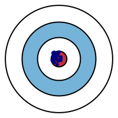
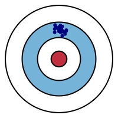
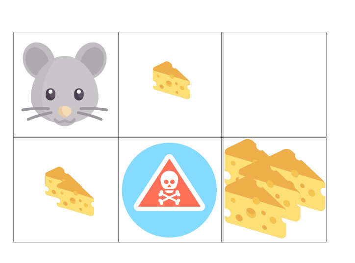
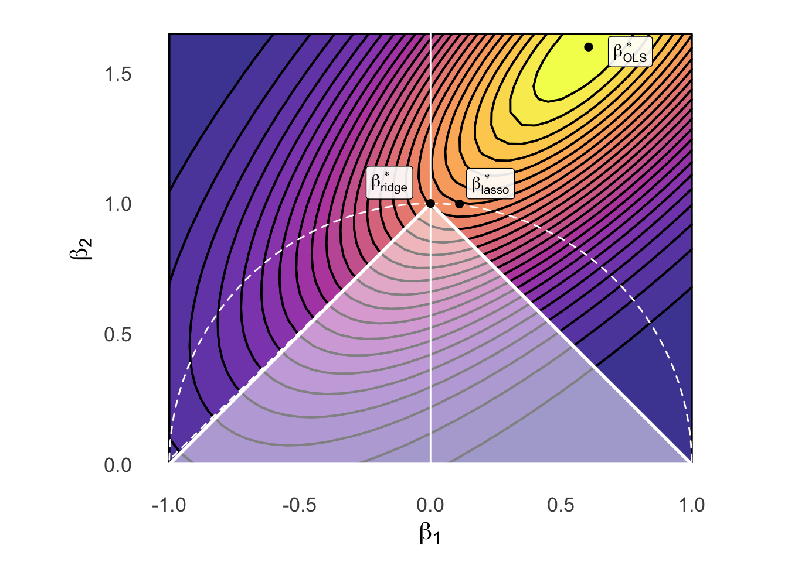

Code
source("../dsan-globals/_globals.r")
set.seed(5300)DSAN 5300: Statistical Learning
Spring 2025, Georgetown University
Today’s Planned Schedule:
| Start | End | Topic | |
|---|---|---|---|
| Lecture | 6:30pm | 7:00pm | Extended Recap / Clarification → |
| 7:00pm | 7:20pm | “Manual” Model Selection: Subsets → | |
| 7:20pm | 7:40pm | Key Regularization Building Block: \(L^p\) Norm → | |
| 7:40pm | 8:00pm | Regularized Regression Intro → | |
| Break! | 8:00pm | 8:10pm | |
| 8:10pm | 8:50pm | Basically Lasso is the Coolest Thing Ever → | |
| 8:50pm | 9:00pm | Scary-Looking But Actually-Fun W07 Preview → |
source("../dsan-globals/_globals.r")
set.seed(5300)\[ \DeclareMathOperator*{\argmax}{argmax} \DeclareMathOperator*{\argmin}{argmin} \newcommand{\bigexp}[1]{\exp\mkern-4mu\left[ #1 \right]} \newcommand{\bigexpect}[1]{\mathbb{E}\mkern-4mu \left[ #1 \right]} \newcommand{\definedas}{\overset{\small\text{def}}{=}} \newcommand{\definedalign}{\overset{\phantom{\text{defn}}}{=}} \newcommand{\eqeventual}{\overset{\text{eventually}}{=}} \newcommand{\Err}{\text{Err}} \newcommand{\expect}[1]{\mathbb{E}[#1]} \newcommand{\expectsq}[1]{\mathbb{E}^2[#1]} \newcommand{\fw}[1]{\texttt{#1}} \newcommand{\given}{\mid} \newcommand{\green}[1]{\color{green}{#1}} \newcommand{\heads}{\outcome{heads}} \newcommand{\iid}{\overset{\text{\small{iid}}}{\sim}} \newcommand{\lik}{\mathcal{L}} \newcommand{\loglik}{\ell} \DeclareMathOperator*{\maximize}{maximize} \DeclareMathOperator*{\minimize}{minimize} \newcommand{\mle}{\textsf{ML}} \newcommand{\nimplies}{\;\not\!\!\!\!\implies} \newcommand{\orange}[1]{\color{orange}{#1}} \newcommand{\outcome}[1]{\textsf{#1}} \newcommand{\param}[1]{{\color{purple} #1}} \newcommand{\pgsamplespace}{\{\green{1},\green{2},\green{3},\purp{4},\purp{5},\purp{6}\}} \newcommand{\prob}[1]{P\left( #1 \right)} \newcommand{\purp}[1]{\color{purple}{#1}} \newcommand{\sign}{\text{Sign}} \newcommand{\spacecap}{\; \cap \;} \newcommand{\spacewedge}{\; \wedge \;} \newcommand{\tails}{\outcome{tails}} \newcommand{\Var}[1]{\text{Var}[#1]} \newcommand{\bigVar}[1]{\text{Var}\mkern-4mu \left[ #1 \right]} \]
| Low Variance | High Variance | |
|---|---|---|
| Low Bias |  |  |
| High Bias |  |  |
Note the icons! Test set = Lake monster: pulling out of water to evaluate kills it 😵
 True Test Error \(\varepsilon_{\text{Test}} = \text{Err}_{\text{Test}}\)
True Test Error \(\varepsilon_{\text{Test}} = \text{Err}_{\text{Test}}\)
Data \(\mathbf{D}\) “arises” out of (unobservable) DGP
Randomly chop \(\mathbf{D}\) into \(\left[ \mathbf{D}_{\text{Train}} \mid \mathbf{D}_{\text{Test}} \right]\)
\(\underbrace{\text{Err}_{\text{Test}}}_{\substack{\text{Test error,} \\ \text{no cap}}} = f(\mathbf{D}_{\text{Train}} \overset{\text{fit}}{\longrightarrow} \underbrace{\mathcal{M}_{\theta} \overset{\text{eval}}{\longrightarrow} \mathbf{D}_{\text{Test}}}_{\text{This kills monster 😢}})\)
Issue: can only be evaluated once, ever 😱
CV plots will often look like (complexity on \(x\)-axis and CV error on \(y\)-axis):
library(tidyverse) |> suppressPackageStartupMessages()
library(latex2exp) |> suppressPackageStartupMessages()
cpl_label <- TeX("$M_0$")
sim1k_delta_df <- tibble(
complexity=1:7,
cv_err=c(8, 2, 1, 1, 1, 1, 2),
label=c("","",TeX("$M_3$"),"","",TeX("$M_6$"),"")
)
sim1k_delta_df |> ggplot(aes(x=complexity, y=cv_err, label=label)) +
geom_line(linewidth=1) +
geom_point(size=(2/3)*g_pointsize) +
geom_text(vjust=-0.7, size=10, parse=TRUE) +
scale_x_continuous(
breaks=seq(from=1,to=7,by=1)
) +
theme_dsan(base_size=22) +
labs(
title="Generic CV Error Plot",
x = "Complexity",
y = "CV Error"
)

(We will take it back out later, I promise!)


| \(k\) | \(\mathcal{M}^*_k\) (Best Subset) | \(\mathcal{M}_k\) (Forward Stepwise) |
|---|---|---|
| 1 | rating |
rating |
| 2 | rating, income |
rating, income |
| 3 | rating, income, student |
rating, income, student |
| 4 | cards, income, student, limit |
rating, income, student, limit |
\[ \textsf{sim}(\mathbf{u}, \mathbf{v}) \triangleq \underbrace{\| \mathbf{v} - \mathbf{u} \|_p}_{L^p\text{ norm of }\mathbf{u} - \mathbf{v}} = \left( \sum_{i=1}^{n} |v_i - u_i|^p \right)^{1/p} \]
\[ \| \mathbf{v} - \mathbf{u} \|_2 = \left( |3-0|^2 + |4-0|^2 \right)^{1/2} = 25^{1/2} = \sqrt{25} = 5 \]
\[ \| \boldsymbol\beta \|_p = \left( \sum_{j=1}^{J} |\beta_j|^p \right)^{1/p} \]
\[ \| \boldsymbol\beta \|_1 = \left( \sum_{j=1}^{J}|\beta_j|^1 \right)^{1/1} = \boxed{\sum_{j=1}^{J}|\beta_j|} \]
\[ \| \boldsymbol\beta \|_2 = \left( \sum_{j=1}^{J}|\beta_j|^2 \right)^{1/2} = \sqrt{\sum_{j=1}^{J}\beta_j^2} \; \; 🤨 \]
\[ \| \boldsymbol\beta \|_2^2 = \left( \left( \sum_{j=1}^{J}|\beta_j|^p \right)^{1/2} \right)^{2} = \boxed{\sum_{j=1}^{J}\beta_j^2} \; \; 💆 \]
\[ \| \mathbf{v} \|_2 \leq 1 \iff \| \mathbf{v} \|_2^2 \leq 1 \]

\[ \| \mathbf{v} \|_1 \leq 1 \]

General Form:
\[ \boldsymbol\beta^*_{\text{reg}} = \argmin_{\boldsymbol\beta}\left[ \overbrace{\frac{1}{N}\sum_{i=1}^{N}(\widehat{y}_i(\boldsymbol\beta) - y_i)^2}^{\text{MSE from before}} \; \; + \; \; \overbrace{\lambda}^{\mathclap{\text{Penalty for}}} \underbrace{\| \boldsymbol\beta \|_{2}^{2}}_{\mathclap{\text{Dist from }\mathbf{0}}} \; \; \; \right] \]
Ridge Regression:
\[ \boldsymbol\beta^*_{\text{ridge}} = \argmin_{\boldsymbol\beta}\left[ \frac{1}{N}\sum_{i=1}^{N}(\widehat{y}_i(\boldsymbol\beta) - y_i)^2 + \lambda \| \boldsymbol\beta \|_{2}^{2} \right] \]
LASSO:
\[ \boldsymbol\beta^*_{\text{lasso}} = \argmin_{\boldsymbol\beta}\left[ \frac{1}{N}\sum_{i=1}^{N}(\widehat{y}_i(\boldsymbol\beta) - y_i)^2 + \lambda \| \boldsymbol\beta \|_{1} \right] \]
Elastic Net:
\[ \boldsymbol\beta^*_{\text{EN}} = \argmin_{\boldsymbol\beta}\left[ \frac{1}{N}\sum_{i=1}^{N}(\widehat{y}_i(\boldsymbol\beta) - y_i)^2 + \lambda_2 \| \boldsymbol\beta \|_{2}^{2} + \lambda_1 \| \boldsymbol\beta \|_{1} \right] \]
(Does anyone recognize \(\lambda\) from Lagrange multipliers?)
Ridge Regression:
\[ \boldsymbol\beta^*_{\text{ridge}} = \arg \left\{\min_{\boldsymbol\beta}\left[ \frac{1}{N}\sum_{i=1}^{N}(\widehat{y}_i(\boldsymbol\beta) - y_i)^2 \right] \; \text{ subject to } \; \| \boldsymbol\beta \|_{2}^{2} \leq s \right\} \]
LASSO:
\[ \boldsymbol\beta^*_{\text{lasso}} = \arg \left\{\min_{\boldsymbol\beta}\left[ \frac{1}{N}\sum_{i=1}^{N}(\widehat{y}_i(\boldsymbol\beta) - y_i)^2 \right] \; \text{ subject to } \; \| \boldsymbol\beta \|_{1} \leq s \right\} \]
Elastic Net:
\[ \boldsymbol\beta^*_{\text{EN}} = \arg \left\{\min_{\beta}\left[ \frac{1}{N}\sum_{i=1}^{N}(\widehat{y}_i(\boldsymbol\beta) - y_i)^2 \right] \; \text{ subject to } \; \begin{matrix} \| \boldsymbol\beta \|_{2}^{2} \leq s_2 \\ \| \boldsymbol\beta \|_{1} \leq s_1 \end{matrix} \right\} \]
library(tidyverse) |> suppressPackageStartupMessages()
library(latex2exp) |> suppressPackageStartupMessages()
library(ggforce) |> suppressPackageStartupMessages()
library(patchwork) |> suppressPackageStartupMessages()
# Bounding the space
xbound <- c(-1, 1)
ybound <- c(0, 1.65)
stepsize <- 0.05
dx <- 0.605
dy <- 1.6
# The actual function we're plotting contours for
b_inter <- 1.5
my_f <- function(x,y) 8^(b_inter*(x-dx)*(y-dy) - (x-dx)^2 - (y-dy)^2)
x_vals <- seq(from=xbound[1], to=xbound[2], by=stepsize)
y_vals <- seq(from=ybound[1], to=ybound[2], by=stepsize)
data_df <- expand_grid(x=x_vals, y=y_vals)
data_df <- data_df |> mutate(
z = my_f(x, y)
)
# Optimal beta df
beta_opt_df <- tibble(
x=121/200, y=8/5, label=c(TeX("$\\beta^*_{OLS}$"))
)
# Ridge optimal beta
ridge_opt_df <- tibble(
x=0.111, y=0.998, label=c(TeX("$\\beta^*_{ridge}$"))
)
# Lasso diamond
lasso_df <- tibble(x=c(1,0,-1,0,1), y=c(0,1,0,-1,0), z=c(1,1,1,1,1))
lasso_opt_df <- tibble(x=0, y=1, label=c(TeX("$\\beta^*_{lasso}$")))
# And plot
base_plot <- ggplot() +
geom_contour_filled(
data=data_df, aes(x=x, y=y, z=z),
alpha=0.8, binwidth = 0.04, color='black', linewidth=0.65
) +
# y-axis
geom_segment(aes(x=0, xend=0, y=-Inf, yend=Inf), color='white', linewidth=0.5, linetype="solid") +
# Unconstrained optimal beta
geom_point(data=beta_opt_df, aes(x=x, y=y), size=2) +
geom_label(
data=beta_opt_df, aes(x=x, y=y, label=label),
hjust=-0.45, vjust=0.65, parse=TRUE, alpha=0.9
) +
scale_fill_viridis_d(option="C") +
#coord_equal() +
labs(
#title = "Model Selection: Ridge vs. Lasso Constraints",
x = TeX("$\\beta_1$"),
y = TeX("$\\beta_2$")
)
ridge_plot <- base_plot +
geom_circle(
aes(x0=0, y0=0, r=1, alpha=I(0.1), linetype="circ", color='circ'), fill=NA, linewidth=0.5
)
# geom_point(
# data=data.frame(x=0, y=0), aes(x=x, y=y),
# shape=21, size=135.8, color='white', stroke=1.2, linestyle="dashed"
# )
lasso_plot <- ridge_plot +
geom_polygon(
data=lasso_df, aes(x=x, y=y, linetype="diamond", color="diamond"),
fill='white',
alpha=0.5,
linewidth=1
) +
# Ridge beta
geom_point(data=ridge_opt_df, aes(x=x, y=y), size=2) +
geom_label(
data=ridge_opt_df, aes(x=x, y=y, label=label),
hjust=2, vjust=-0.15, parse=TRUE, alpha=0.9
) +
# Lasso beta
geom_point(data=lasso_opt_df, aes(x=x, y=y), size=2) +
geom_label(
data=lasso_opt_df, aes(x=x, y=y, label=label),
hjust=-0.75, vjust=-0.15, parse=TRUE, alpha=0.9
) +
ylim(ybound[1], ybound[2]) +
# xlim(xbound[1], xbound[2]) +
scale_linetype_manual("Line", values=c("diamond"="solid", "circ"="dashed"), labels=c("a","b")) +
scale_color_manual("Color", values=c("diamond"="white", "circ"="white"), labels=c("c","d")) +
# scale_fill_manual("Test") +
# x-axis
geom_segment(aes(x=-Inf, xend=Inf, y=0, yend=0), color='white') +
theme_dsan(base_size=16) +
coord_fixed() +
theme(
legend.position = "none",
axis.line = element_blank(),
axis.ticks = element_blank()
)
lasso_plot
\[ f_X(x) = \frac{1}{\sqrt{2\pi \sigma^2}}\exp\left[ -\frac{1}{2}\left( \frac{x-\mu}{\sigma}\right)^2 \right] \]
library(tidyverse) |> suppressPackageStartupMessages()
library(latex2exp) |> suppressPackageStartupMessages()
prior_labs <- labs(
x = TeX("$\\beta_j$"),
y = TeX("$f(\\beta_j)$")
)
ggplot() +
stat_function(fun=dnorm, linewidth=1) +
xlim(-3, 3) +
theme_dsan(base_size=28) +
prior_labs
\[ f(x) = \frac{1}{2b}\exp\left[ -\left| \frac{x - \mu}{b} \right| \right] \]
library(tidyverse) |> suppressPackageStartupMessages()
library(latex2exp) |> suppressPackageStartupMessages()
library(extraDistr) |> suppressPackageStartupMessages()
ggplot() +
stat_function(fun=dlaplace, linewidth=1) +
xlim(-3, 3) +
theme_dsan(base_size=28) +
prior_labs


\[ Y = \beta_0 + \beta_1X + \beta_2X^2 + \beta_3X^3 + \cdots + \beta_d X^d \]
\[ \begin{align*} Y = \beta_0 + \beta_1 \cos(\pi X) + \beta_2 \sin(\pi X) + \cdots + \beta_{2d-1}\cos(\pi d X) + \beta_{2d}\sin(\pi d X) \end{align*} \]
Piecewise regression:
Choose \(K\) cutpoints \(c_1, \ldots, c_K\)
Let \(C_k(X) = \mathbb{1}[c_{k-1} \leq X < c_k]\), (\(c_0 \equiv -\infty\), \(c_{K+1} \equiv \infty\))
\[ Y = \beta_0 + \beta_1C_1(X) + \beta_2C_2(X) + \cdots + \beta_KC_K(X) \]

Q: What do all these types of regression have in common?
A: They can all be written in the form
\[ Y = \beta_0 + \beta_1 b_1(X) + \beta_2 b_2(X) + \cdots + \beta_d b_d(X) \]
Where \(b(\cdot)\) is called a basis function